Geraud
Nangue Tasse


A Boolean Task Algebra For Reinforcement Learning
Paper at NeurIPS 2020 Poster Session 6
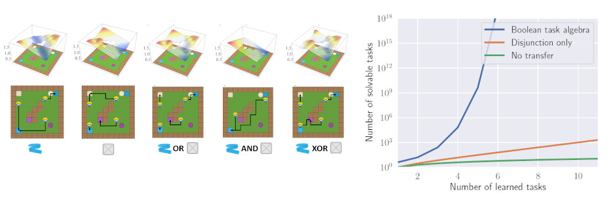
RL Multi Task Transfer Learning Logic Composition Zero-shotAbstract
In this work, we investigate how to compose learned skills to solve their conjunction, disjunction, and negation in a manner that is both principled and optimal. We begin by introducing a goal-oriented value function that amortises the learning effort over future tasks. We then prove that by composing these value functions in specific ways, we immediately recover the optimal policies for the conjunction, disjunction, and negation of learned tasks. Finally, we formalise the logical composition of tasks in a Boolean algebra structure. This gives us a notion of base tasks which when learned, can be composed to solve any other task in a domain.
Introduction
In this post, we are interested in answering the following question: given a set of existing skills, can we compose them to solve any task that is a logical combination of learned ones? To illustrate want we want, we will use the 2d video game domain of Van Niekerk [2019] where we train an agent to collect blue objects and separately train it to collect squares. We then see if we can obtain the skill to collect blue squares by averaging the learned value functions (since averaging is the best we can do from previous works [Haarnoja 2018, Van Niekerk 2019]). The respective value functions and trajectories are illustrated below.
Attempting to collect blue squares by composing learned skills - collecting blue objects and collecting squares - results in an agent that gets stuck optimally.
We can see that averaging over both value functions doesn’t work unless the agent is near the blue square (e.g the agent is stuck when it is in between the beige square and blue circle). Notice how there is, in fact, no operator that can be used to optimally combine these value functions to collect blue squares. This is because regular value functions only encode the values with respect to the best goal, and hence learn nothing about all other achievable goals. We address this issue in the next section.
Extended value functions
As we have discussed earlier, composing regular value functions does not give desired results because they only encode how to reach the best goal from each state. We therefore extended the regular definition of value functions to encode the values of achieving all goals, and not just the best one: $$ \bar V^ { \bar \pi }(s,g) = \mathbb{E}_{ \bar \pi } \left[ \sum\limits_{t=0}^\infty \bar r(s_t, g, a_t) \right], $$ where $$ \bar r(s, g, a) = \begin{cases} \bar r_{MIN} & \text{if } g \neq s \in G \\ r(s, a) &\text{otherwise} \end{cases} $$
is the extended reward function. This extension to the regular reward function encourages the agent to learn about various goals by giving a large penalty ($\bar r_{MIN}$) if the agent reaches goals different from the ones it wanted to reach. So as the agent acts in the environment it receives the task rewards and learns the values of each state with respect to each goal it reaches. If it reaches a goal that is different from the one it wanted to reach, it receives a large penalty so it learns in the future to avoid it if possible. The result of this is that the agent learns to achieve any goal that is achievable, and also learns the value of achieving those goals for the current task. To illustrate this, we train a UVFA [Schaul 2015] using the extended reward definition for the task of collecting blue objects. The learned extended value function (EVF) and sample trajectories are illustrated below.
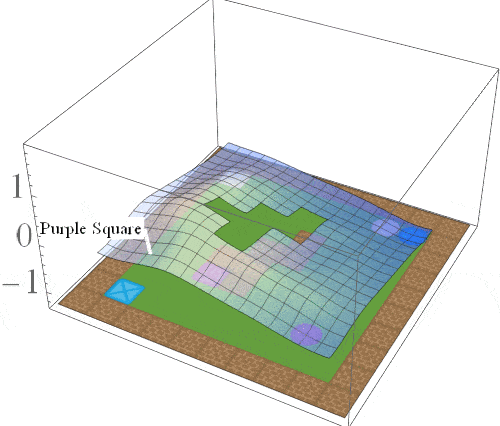
Learned EVF for collecting blue objects (left). The regular value function (middle) and policy (right) are obtained by simply maximising over goals.
Composing extended value functions
Now that we can learn value functions which encode how to achieve all goals for a given tasks, it is easy to see how we can leverage them to do zero-shot composition. Say an agent has learned the EVF for the task of collecting blue objects ($B$) and for collecting squares ($S$). We can now compose these value functions to not only solve their conjunction ($B \text{ AND } S$) , but also to solve their union ($B \text{ OR } S$) and negation ($\text{NOT } S$) as follows:
$$ \bar Q^*_{B \text{ AND } S}(s,g,a) = min \{ \bar Q^*_B(s,g,a), \bar Q^*_S(s,g,a) \}, $$
$$ \bar Q^*_{B \text{ OR } S}(s,g,a) = max \{ \bar Q^*_B(s,g,a), \bar Q^*_S(s,g,a) \}, $$
$$ \bar Q^{*}_{\text{NOT } S}(s,g,a) = ( \bar Q^{*}_{MAX}(s,g,a) + \bar Q^{*}_{MIN}(s,g,a)) - \bar Q^{*}_S(s,g,a), $$
where $\bar Q^{*}_{MAX}$ and $\bar Q^{*}_{MIN}$ are respectively the EVFs for the tasks where the agent receives maximum reward and minimum reward for all goals.
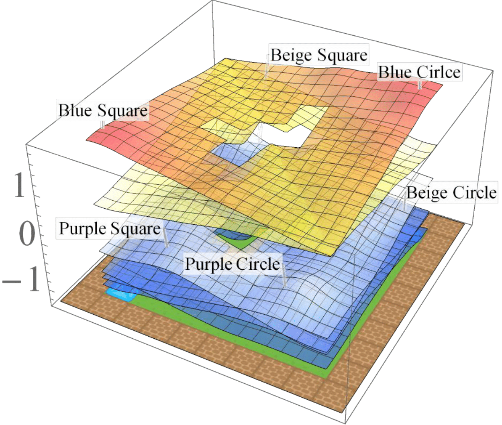 |
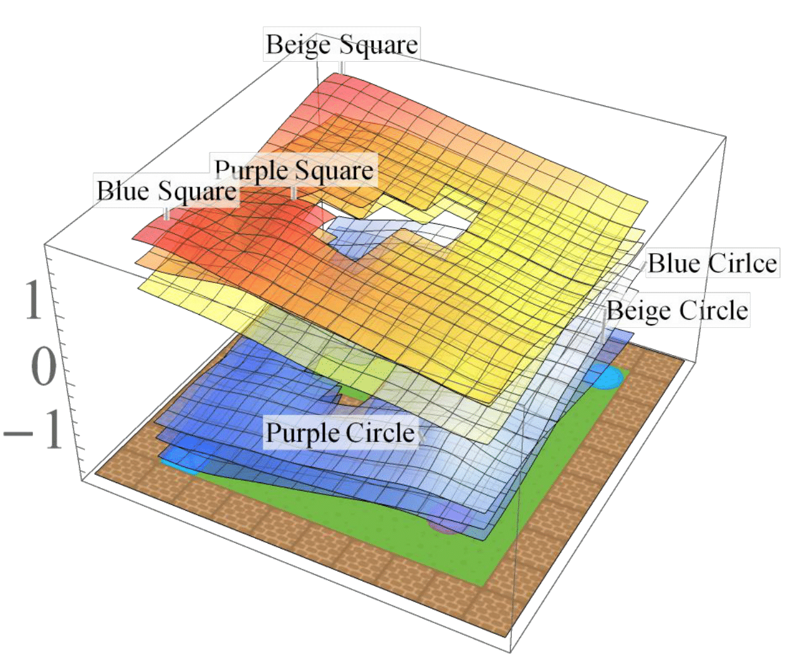 |
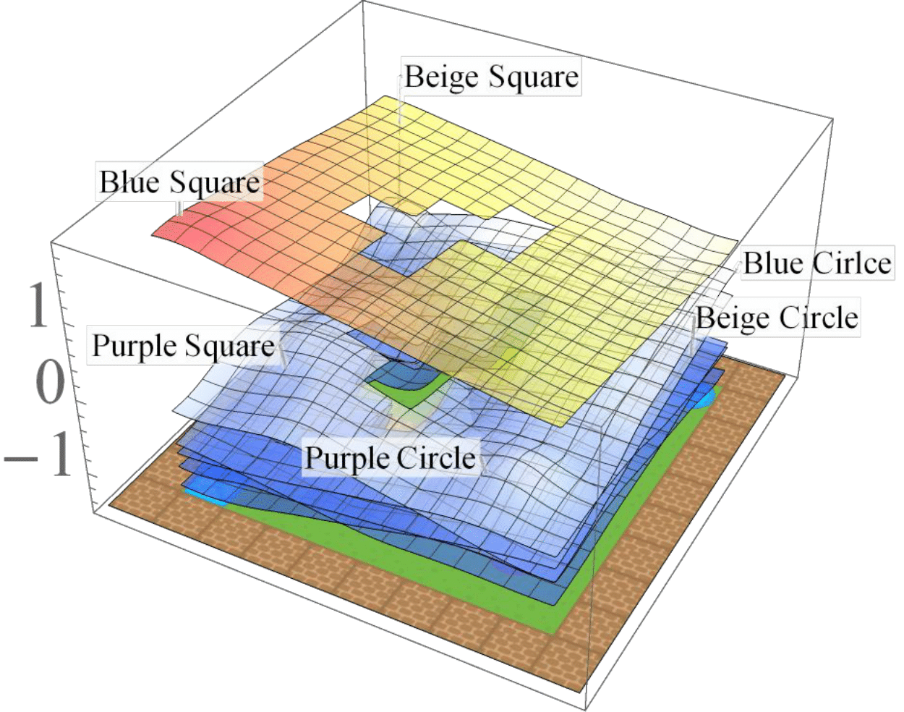 |
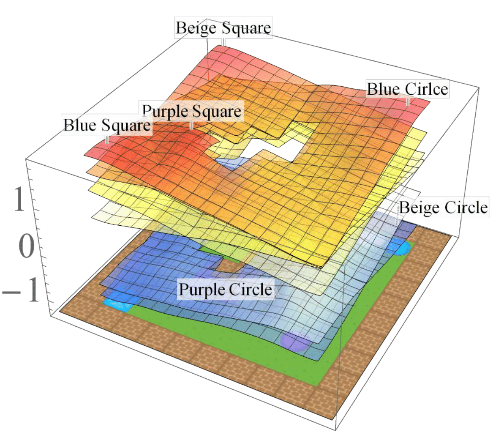 |
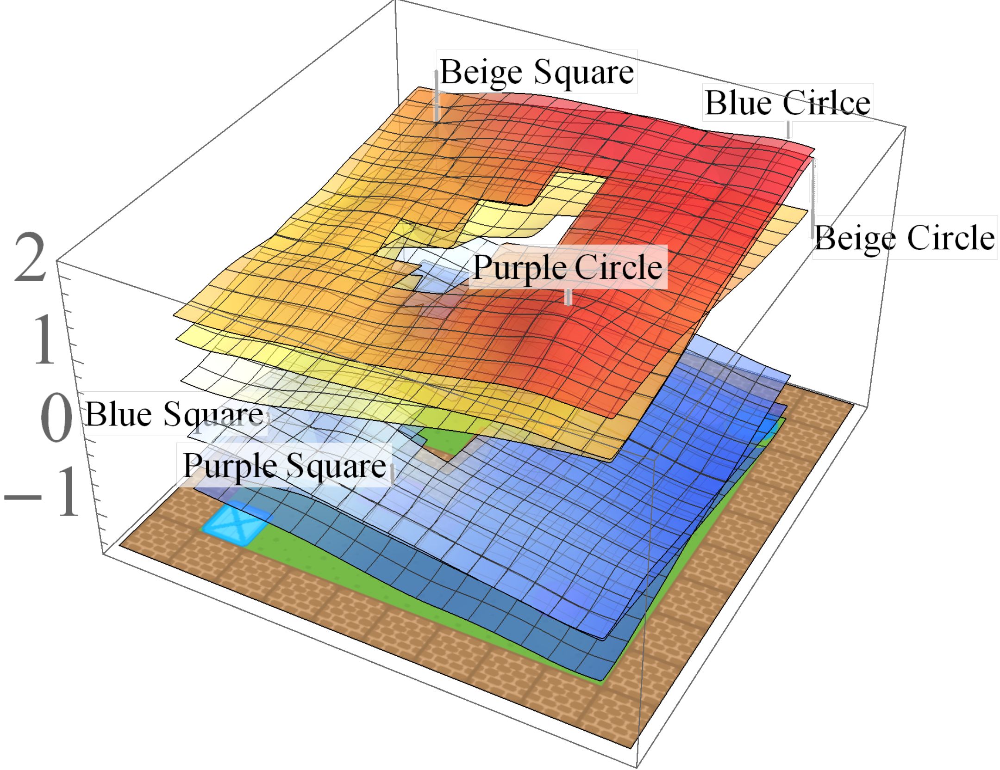 |
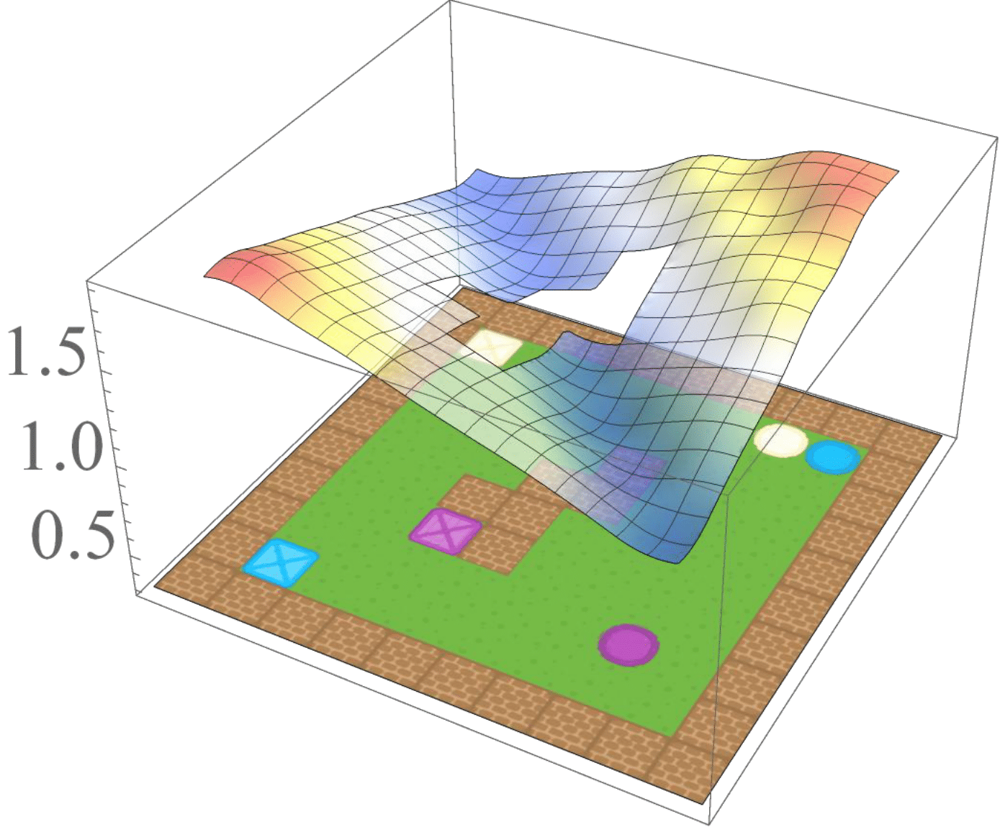 |
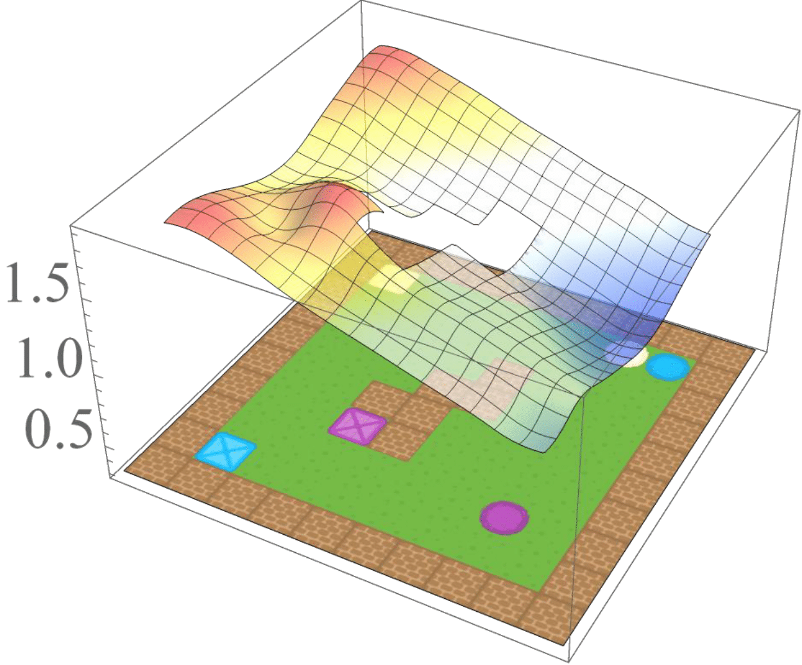 |
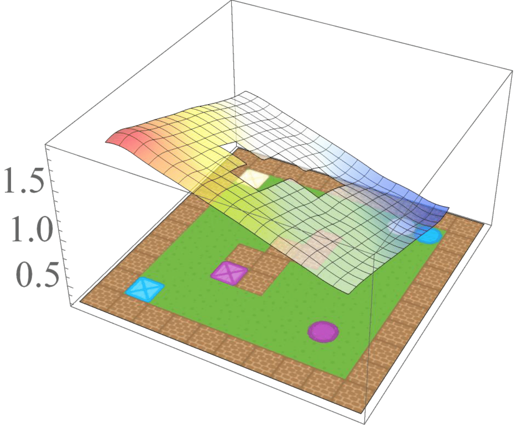 |
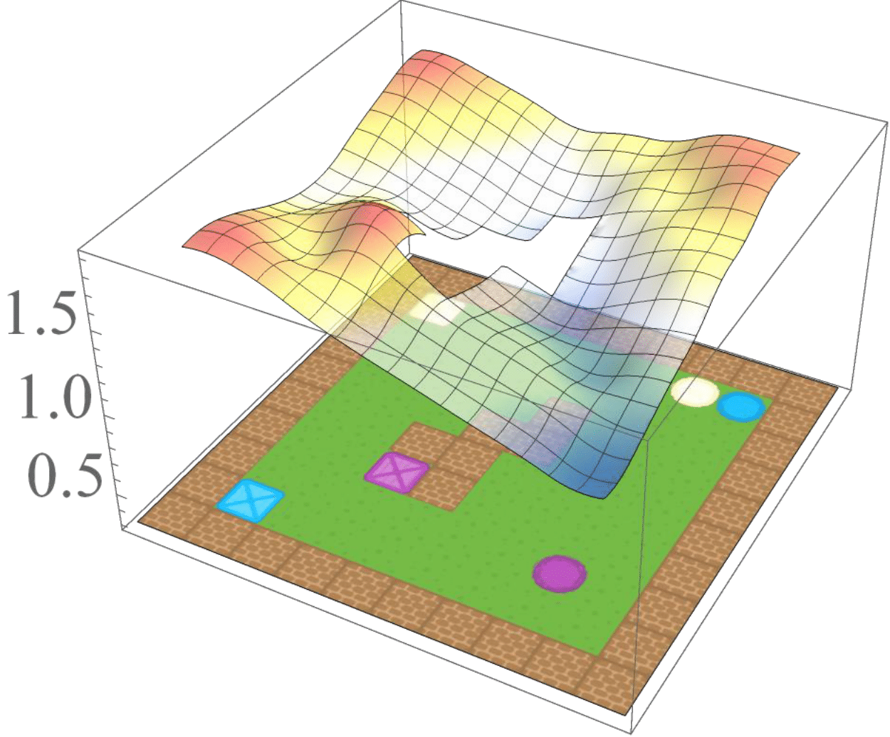 |
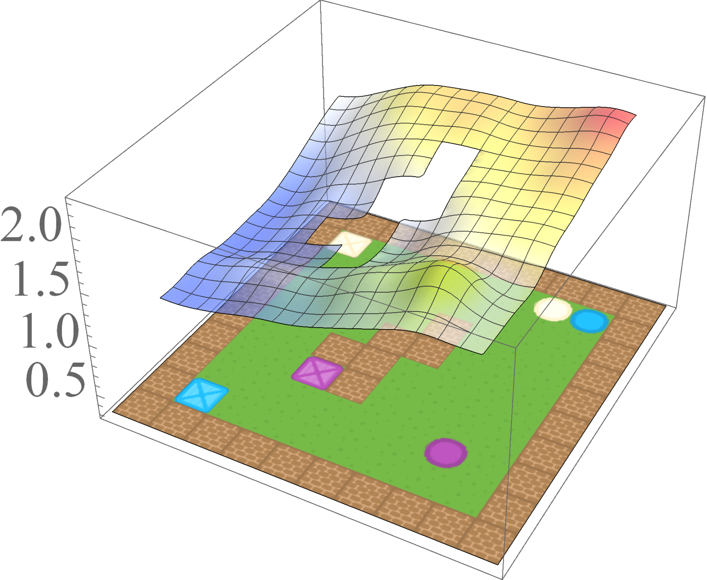 |
Demonstrating zero-shot composition using learned extended value functions. The top row shows the extended value functions and the bottom one shows the trajectories obtained by maximising over goals. After learning the extended value functions for collecting blue objects and collecting squares, we can now solve their conjunction (collecting blue squares), their disjunction (collecting blue or square objects) and their negation (e.g collecting objects that are not squares).
If we consider the same family of tasks as Van Niekerk [2019] where (i) the tasks have the same deterministic transition dynamics and differ only in reward functions, (ii) the reward functions differ only when entering terminal states (i.e for all non-terminal states, the rewards must be the same), then we can show that this composition approach is provably optimal in general. While this is a restricted family of tasks, it still allows for tasks with sparse rewards. For instance, an agent can receive $-1$ everywhere and $+1$ for entering the current task's terminal states.
More complex logical compositions
Now that we can compose existing skills to solve the conjunction, disjunction, and negation of tasks without further learning, we can also combine these operators to solve arbitrary logical compositions of tasks without further learning. For example, after learning how to collect blue objects and then learning how to collect squares, and agent can compose the learned EVFs to solve their exclusive-or ($B \text{ XOR } S = (B \text{ OR } S) \text{ AND } \text{NOT } (B \text{ AND } S$), where the agent needs to collect objects that are blue or square but not both:
$$ \bar Q^*_{B \text{ XOR } S}(s,g,a) = min \{ max \{ \bar Q^*_B(s,g,a), \bar Q^*_S(s,g,a) \}, ( \bar Q^{*}_{MAX}(s,g,a) + \bar Q^{*}_{MIN}(s,g,a)) \\ - min \{ \bar Q^*_B(s,g,a), \bar Q^*_S(s,g,a) \} \} $$
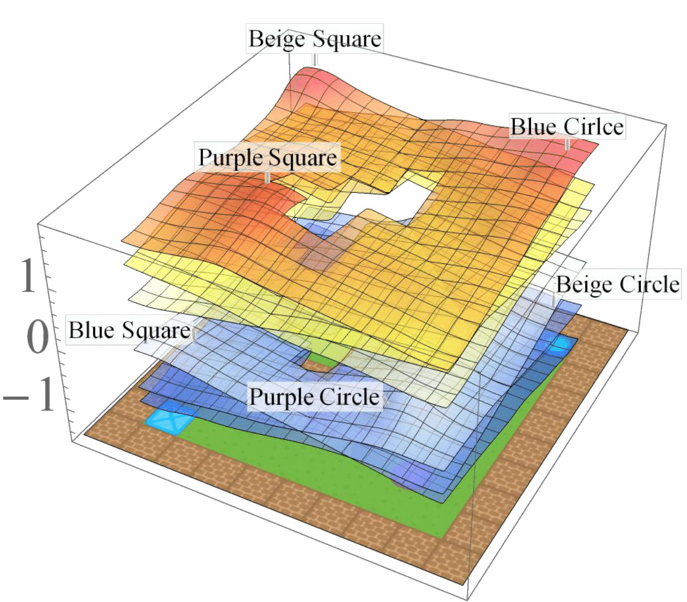
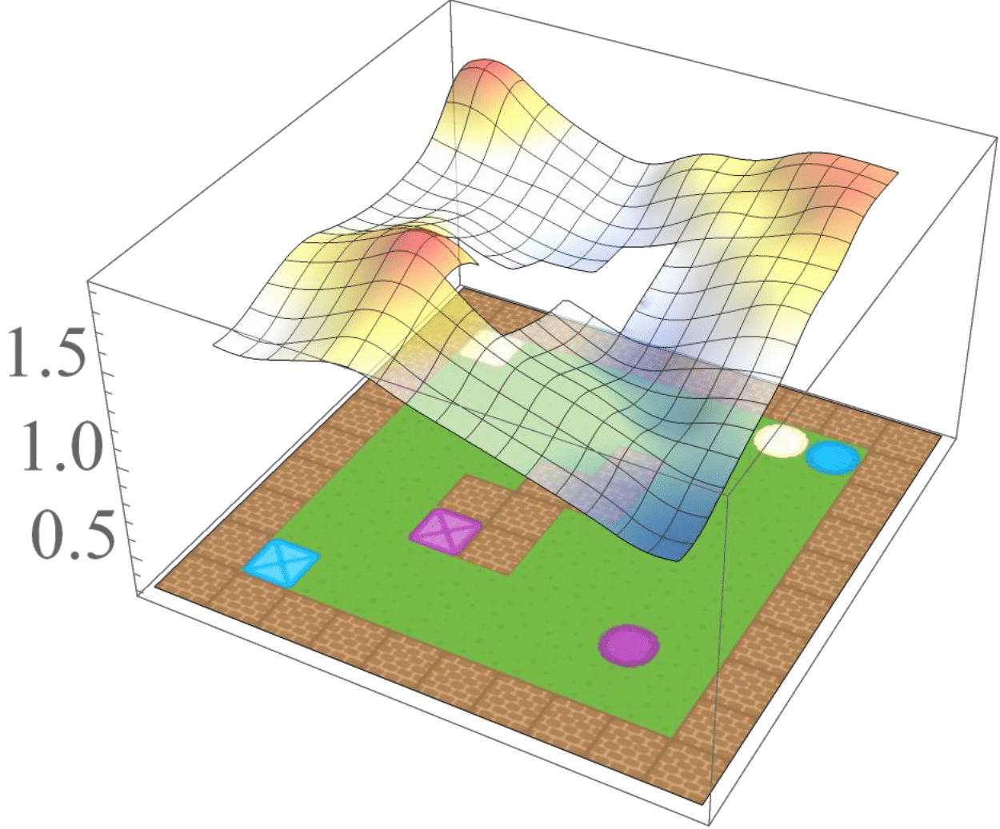
Composed skill for collecting blue or square objects but not blue squares.
Boolean task algebra
We have seen above how an agent can leverage existing skills to solve arbitrary logical composition of tasks without further learning. Interestingly, if the tasks have Boolean goal rewards (e.g $-1$ for reaching undesirable goal states and $+1$ for reaching desirable ones), then we can easily formalise their logical compositions in a Boolean algebra structure as follows:
$$ M_1 \text{ AND } M_2 = (\mathcal{S},\mathcal{A},p,r_{M_1 \text{ AND } M_2}) \text{, where } r_{M_1 \text{ AND } M_2}(s,a) = min \{ r_{M_1}(s,a), r_{M_2}(s,a) \}, $$
$$ M_1 \text{ OR } M_2 = (\mathcal{S},\mathcal{A},p,r_{M_1 \text{ OR } M_2}) \text{, where } r_{M_1 \text{ OR } M_2}(s,a) = max \{ r_{M_1}(s,a), r_{M_2}(s,a) \}, $$
$$ \text{NOT } M = (\mathcal{S},\mathcal{A},p,r_{\text{NOT } M}) \text{, where } r_{\text{NOT } M}(s,a) = ( r_{M_{MAX}}(s,a) + r_{M_{MIN}}(s,a)) - r_M(s,a), $$
where $M_1$, $M_2$, $M$ are arbitrary tasks, and $M_{MAX}$, $M_{MIN}$ are respectively the tasks where the agent receives maximum reward and minimum reward for all goals.
The Boolean task algebra gives us a formal notion of base tasks, which is a minimal set of tasks that can be used to generate all other tasks via arbitrary logical compositions. To obtain a set of base tasks, we can first assign a Boolean label to each goal in a table, and then use the columns of the table as base tasks. The desirable goals for each base task are then those goals with a value of 1 according to the table. This is illustrated below for the 2d video game domain. In general, an environment with $n$ goals has a logarithmic number of base tasks ($\lceil \log_2n \rceil$) which can be used to specify an exponential number of total tasks ($2^n$).
| Goals | P | B | S |
| Beige circle | 0 | 0 | 0 |
| Beige square | 0 | 0 | 1 |
| Blue circle | 0 | 1 | 0 |
| Blue square | 0 | 1 | 1 |
| Purple circle | 1 | 0 | 0 |
| Purple square | 1 | 0 | 1 |
Boolean table showing base tasks for the 2d video game domain.
Generalising over a task space by learning base skills
By combining the notion of base tasks introduced above with the zero-shot composition of EVFs obtained earlier, we get a minimal set of skills which when learned can be used to solve any other task in an environment. To illustrate this, we first learn the EVFs for the following base tasks in the 2d video game domain: Collect purple objects ($P$), collect blue objects ($B$), and collect squares ($S$). Sample trajectories are shown below.
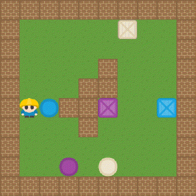
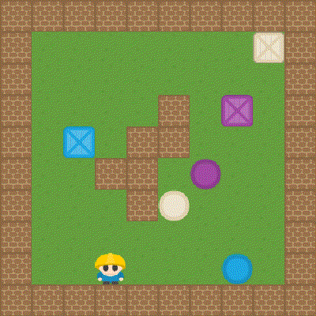
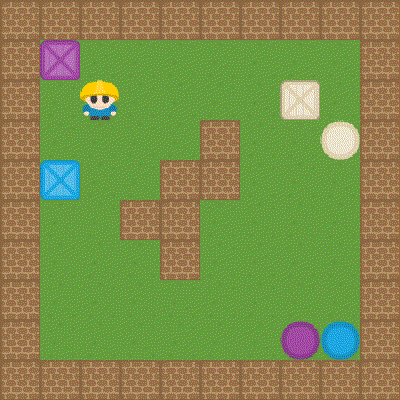
Learned base skills for collecting purple objects, blue objects, and squares respectively.
We now compose the learned base skills to solve all $2^6=64$ tasks in the domain. The respective Boolean expressions and sample trajectories are shown below.
Trajectories for all 64 tasks obtained by composing base skills. The expressions for each task where obtained from the Boolean table by using the sum-of-products method.
Conclusion
We have shown how to compose tasks using the standard Boolean algebra operators. These composite tasks can be solved without further learning by first learning goal-oriented value functions, and then composing them in a similar manner. We believe this is a step towards both interpretable RL—since both the tasks and optimal value functions can be specified using Boolean operators—and the ultimate goal of lifelong learning agents, which are able to solve combinatorially many tasks in a sample-efficient manner.
Additional Resources
For more details please refer to the full paper and see the video presentation below. The poster can be found here and the code for all the experiments can be found on GitHub here.
References
- [Van Niekerk 2019] Van Niekerk, B., James, S., Earle, A., and Rosman, B. Composing value functions in reinforcement learning. In Proceedings of the 36th International Conference on Machine Learning, 2019.
- [Haarnoja 2018] Haarnoja, T., Pong, V., Zhou, A., Dalal, M., Abbeel, P., and Levine, S. Composable deep reinforcement learning for robotic manipulation. In IEEE International Conference on Robotics and Automation, 2018.
- [Schaul 2015] Schaul, T., Horgan, D., Gregor, K., and Silver, D. Universal value function approximators. In Proceedings of the 32nd International Conference on Machine Learning, 2015.